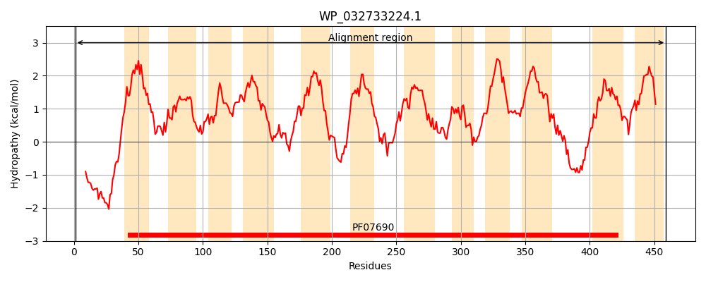
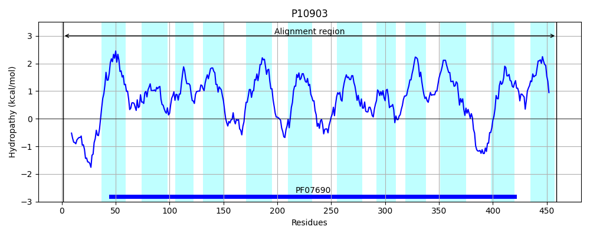
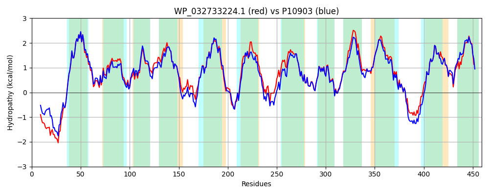

Hit Accession: P10903
Hit TCID: 2.A.1.8.1
Hit Description: gnl|BL_ORD_ID|9005 gnl|TC-DB|P10903|2.A.1.8.1 Nitrite extrusion protein 1 (Nitrite facilitator 1) - Escherichia coli.
Mach Len: 459
e:0.000000
Query TMS Count : 12
Hit TMS Count: 12
TMS-Overlap Score: 12.200000
Predicted Substrates:CHEBI:5584;hydron, CHEBI:7585;nitrite, CHEBI:71263;nitrate
BLAST Alignment:
Score: 2086 , Bit scores: 808 bits, E-value: 0.0e+00, Alignment length: 459, Percentage identity: 86
Query: 1 MSQSSLPEKANRSVITDWRPEDPEFWQQRGHRVASRNLWISVPCLLLAFCVWMLFSAVAVNLNKVGFQFTTDQLFMLTALPALSGALLRVPYAFMVPLFGGRRWTAFSTGIMIIPCVWLGFAVQDTSTPFSVFVIISLLCGFAGANFASSMANISFFFPKAKQGGALGVNGGLGNMGVSVMQLVAPLVVSVSVFAFFGGTGSEQPDGSMLYLENAAWIWVPFLIIFTLAAWFFMNDLSASKASLSEQLPVLKRLHLWIMALLYLATFGSFIGFSAGFAMLSKTQFPDVQILHYAFFGPFIGALARSMGGAISDRLGGTRVTLVNFVVMAVFCALLFLTLPTNGQGGNFIAFFAVFMVLFLTAGLGSASTFQMISVIFRKLTMDRVKAQGGSEAQAMREAATDTAAALGFISAIGAIGGFFIPKAFGISLDLTGSPAGAMKIFLIFYIACVIITWAVYGR 459
MS SS PE+A +VITDWRPEDP FWQQRG R+ASRNLWISVPCLLLAFCVWMLFSAVAVNL KVGF FTTDQLFMLTALP++SGALLRVPY+FMVP+FGGRRWTAFSTGI+IIPCVWLGFAVQDTSTP+SVF+IISLLCGFAGANFASSMANISFFFPK KQGGALG+NGGLGNMGVSVMQLVAPLVVS+S+FA FG G +QPDG+ LYL NA+WIWVPFL IFT+AAWF MNDL+ SKAS+ EQLPVLKR HLWIM+LLYLATFGSFIGFSAGFAMLSKTQFPDVQIL YAFFGPFIGALARS GGA+SDRLGGTRVTLVNF++MA+F LLFLTLPT+GQGG+F+AFFAVF+ LFLTAGLGS STFQMISVIFRKLTMDRVKA+GGS+ +AMREAATDTAAALGFISAIGAIGGFFIPKAFG SL LTGSP GAMK+FLIFYIACV+ITWAVYGR
Sbjct: 1 MSHSSAPERATGAVITDWRPEDPAFWQQRGQRIASRNLWISVPCLLLAFCVWMLFSAVAVNLPKVGFNFTTDQLFMLTALPSVSGALLRVPYSFMVPIFGGRRWTAFSTGILIIPCVWLGFAVQDTSTPYSVFIIISLLCGFAGANFASSMANISFFFPKQKQGGALGLNGGLGNMGVSVMQLVAPLVVSLSIFAVFGSQGVKQPDGTELYLANASWIWVPFLAIFTIAAWFGMNDLATSKASIKEQLPVLKRGHLWIMSLLYLATFGSFIGFSAGFAMLSKTQFPDVQILQYAFFGPFIGALARSAGGALSDRLGGTRVTLVNFILMAIFSGLLFLTLPTDGQGGSFMAFFAVFLALFLTAGLGSGSTFQMISVIFRKLTMDRVKAEGGSDERAMREAATDTAAALGFISAIGAIGGFFIPKAFGSSLALTGSPVGAMKVFLIFYIACVVITWAVYGR 459 | Protein Hydropathy Plots: |
|---|
|  |  |
Pairwise Alignment-Hydropathy Plot:
|
|---|
|  |